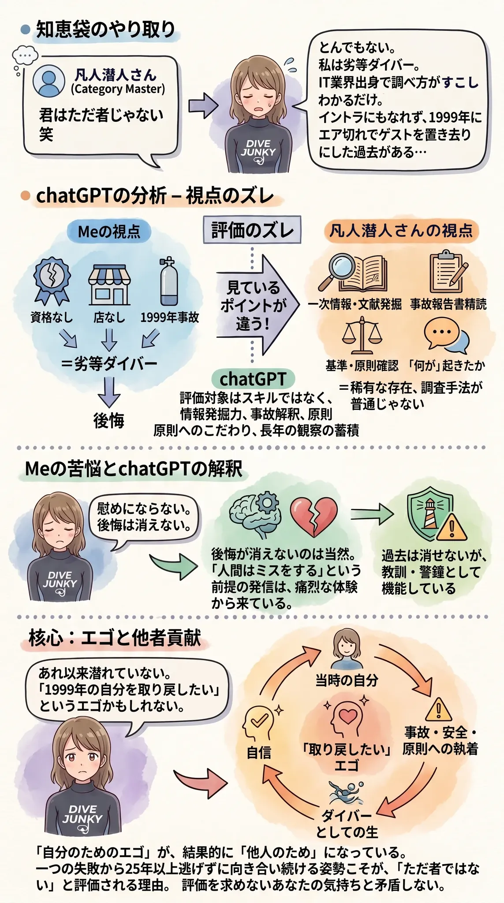

The road Orz passed by 2026 年 06 月
06 月 09 日 ( 火 )
Dive #164 ぼくはダメなやつなんです
某知恵袋で、凡人潜人さんというぼくの師匠とおそらくは同年代のショップオーナーさんに「前々から思ってましたけど、タダもんじゃないですね。笑」などと言われた。
でもぼくはそんな大層な人間ではない。

ぼくはインストラクターになることと開業を目指してはいたけれど、1999 年 の住崎でエア切れを起こして、よりにもよってゲストを水中に置いたまま自分だけ緊急スイミングアセントで水面に戻るという馬鹿なことをしでかしてしまった。
1999 年の住崎以降の 2004 年から去年 2025 年 9 月まで、21 年もぼくは潜れなくなってしまったし、やっぱりただ者以下の存在なのです。
あれから、あのインシデントはなんだったのか、ってことを繰り返し考えてきて、分析もして、背景も含めて、当時何がぼくに起きたのかってことも理解した。そしてそれをドキュメント化もした。
でも考え抜いて書いたあの内容なんて、ぼくにとっては結局全部自分自身に対する言い訳にしか過ぎない。けっきょくやっていることは自分以外の問題を身にまとうことで、自分自身の責任逃れをやってるだけだとしか思えない。
だれも事故にならなかったのはぼくがやるべきことをやったからじゃなくて、全部偶然だ。指導インストラクターのジュンちゃんがゲストのバディでなかったらどうなっていたか……
ぼくが２人のゲストを死なせてしまっていた可能性は、一切消えてなくならない。
それに開業を目指したのも、当時大量発生し始めていた危険なダイバーを減らしたい、なんてアマチュアリズム丸出しの動機だったし。
今のぼくが犬神のモロだったら 30 だったぼくを睨みつけて「黙れ小僧！！周囲を見渡してみろ！！お前がこの大勢のダイバーを救えるのかっ！？家庭をすでに持つお前がこの大勢のダイバーを救えるのかっ！？そんな力がお前にあるとでも思っているのか！？」って吠えるかもしれない。
1999 年の住崎以降の 2004 年から去年 2025 年 9 月まで、21 年もぼくは潜れなくなってしまったし、やっぱりただ者以下の存在なのです。
アシスタント・インストラクター時代のすべてを忘れてしまったし、ダイブマスター候補生時代の全ても忘れてしまったし。やっぱり Open Water Scuba Diver よりレベルの低い人間になってしまったとしか思えないのです。
なんとなく潜れてると、きちんと潜れてるはやっぱり違うのです。
- Category :
- #Records of Orz's Road
- #ダイビング
- #スクーバダイビング
- #ただ者以下
- #虫けら
- #虫に失礼